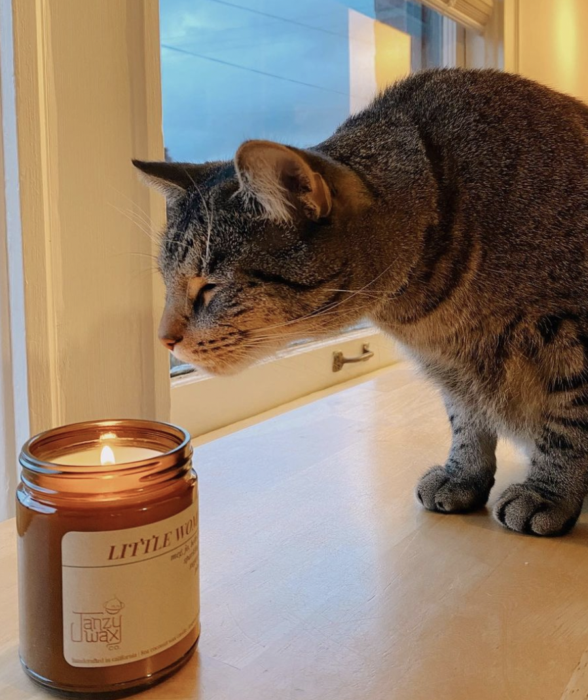

The first cat I remember was a sweet, fluffy gray cat named Oscar. He passed away when I was 3, and soon after we adopted two kittens. One was a black and white male we called Tux (short for Tuxedo) and the other was a fluffy orange female that my brothers and I wanted to call Tiger Stripes, but my dad went with Hillary, after Sir Edmund Hillary, since she was such an active climber. When I was sixteen, a friend gifted me a gray and white kitten I named Dexter. When I left for college he stayed with my parents, where he still lives.
In February 2021, my partner and I adopted a two year old brown tabby cat named Teeka, who we quickly renamed to Melon Lord (Melon for short) as a reference to one of our favorite shows, "Avatar: The Last Airbender". We adopted him through a local cat sanctuary / cafe that partners with Humane Societies from a few local counties in Washington.
Neko Cat Cafe, where we adopted Melon from.